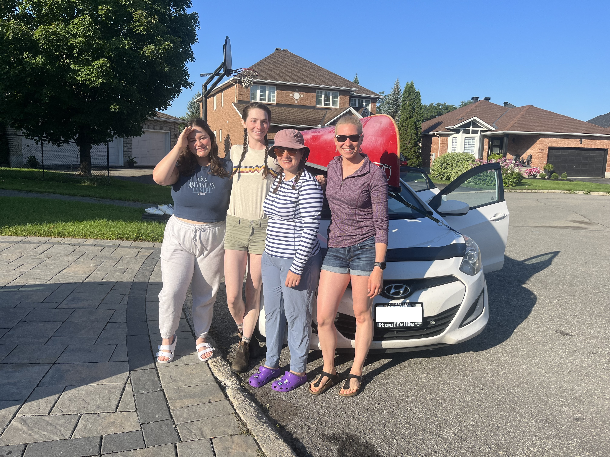
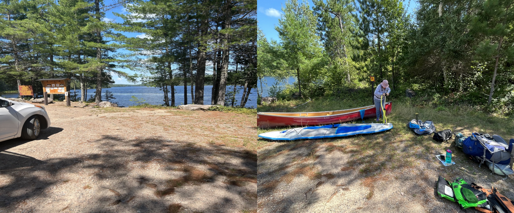
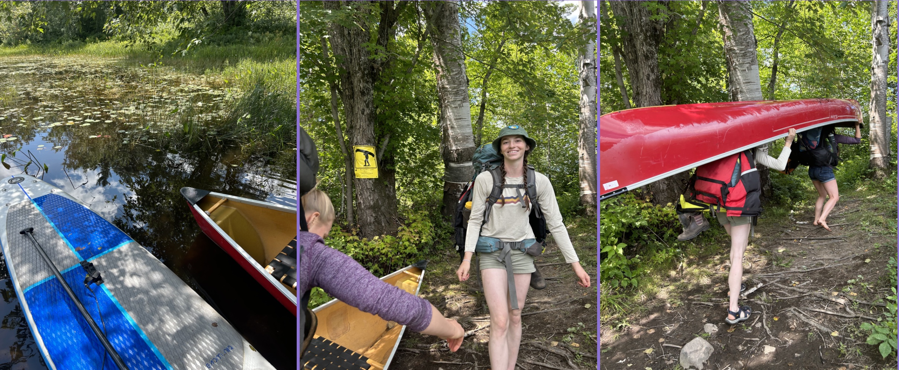
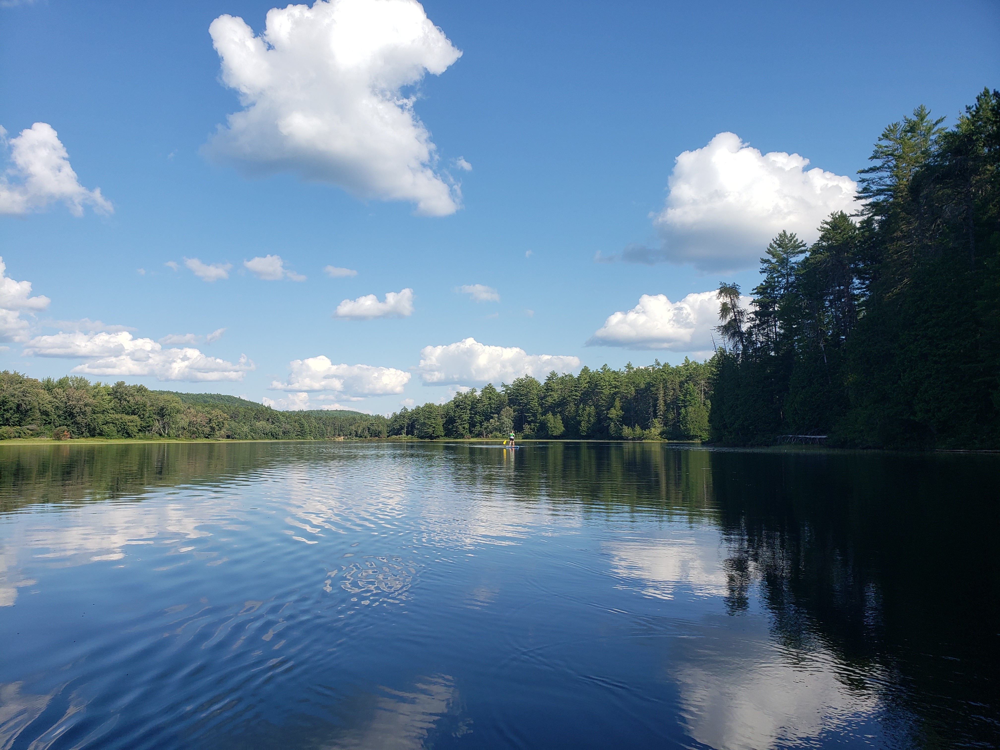
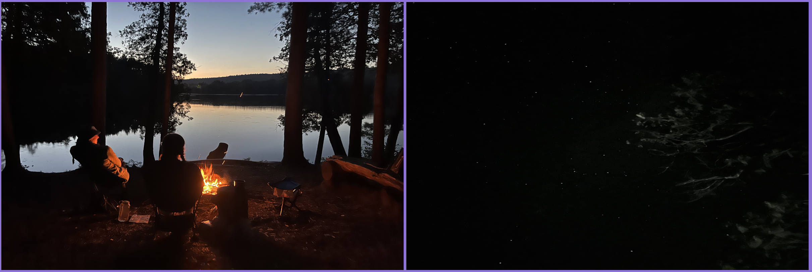
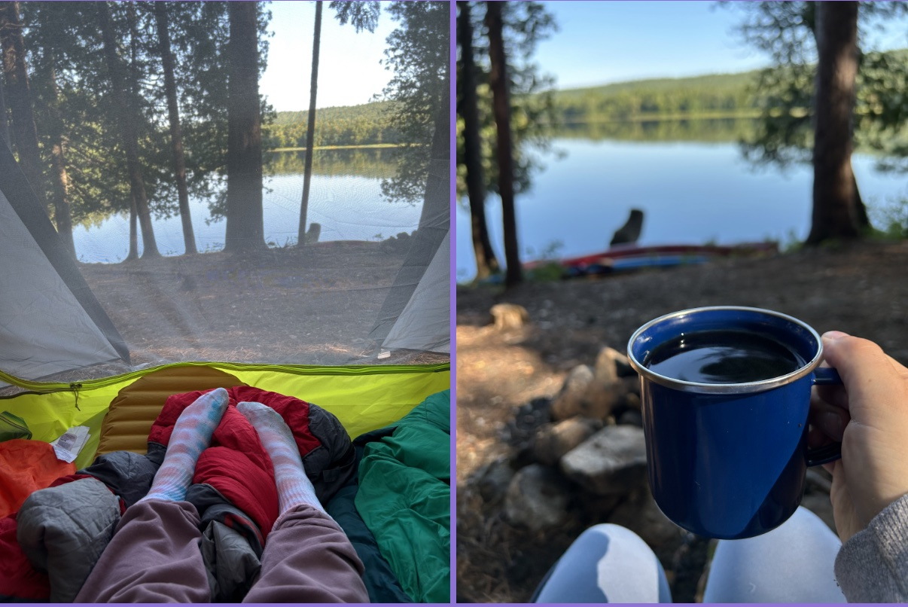
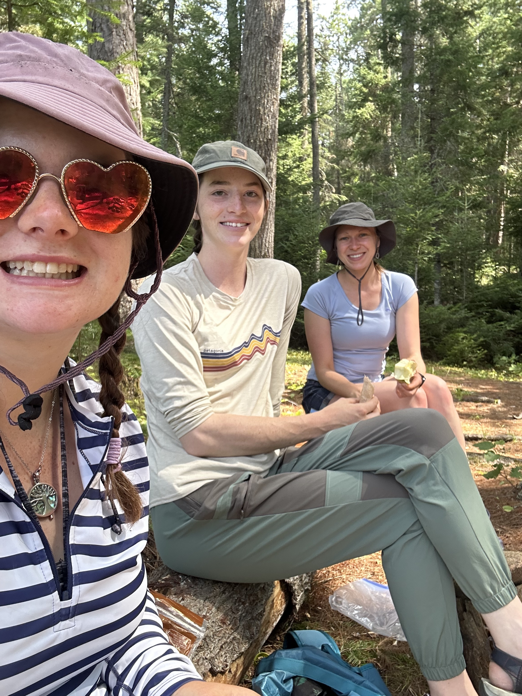
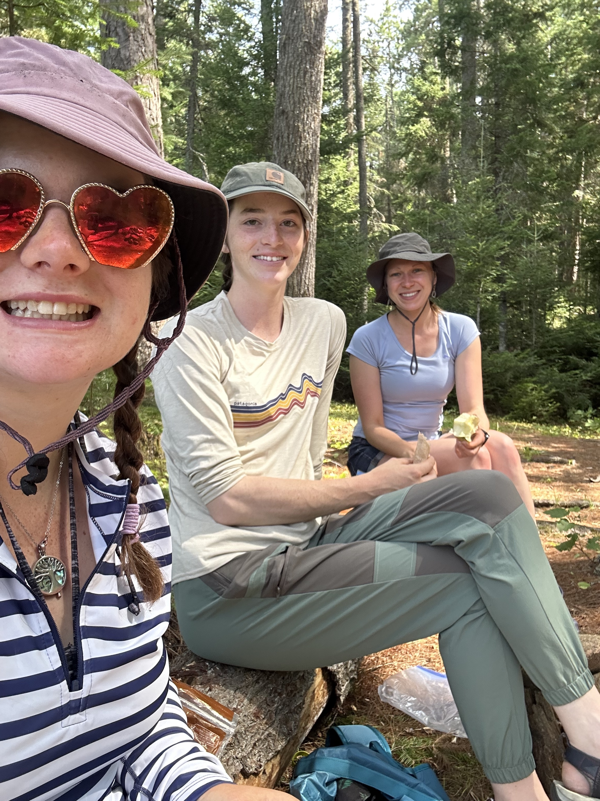
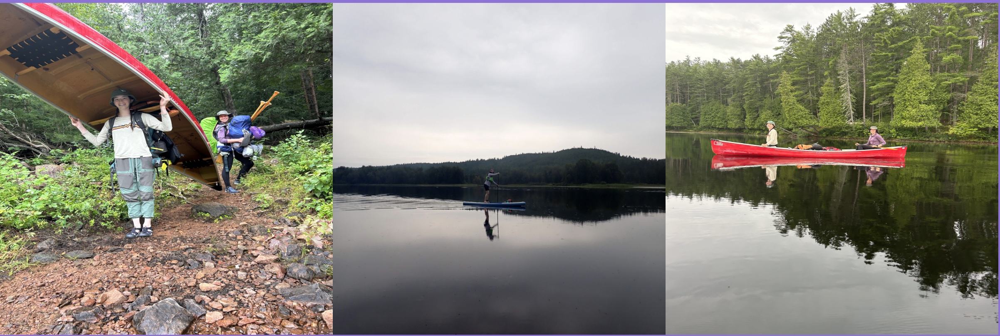

Friday August 4th, 2023 (Last minute trip prep)
After work, Rebecca (my friend from work) and I both drove home to pack and prepare for the weekend ahead.
Rebecca picked me up around 5:30 to go pick up the canoe that we were borrowing and then drop it off at Fiona’s (our other friend/coworker) house to store for the night. Then Rebecca drove me
home so I could finish packing and meet Alex (my friend/roommate/classmate from Lakehead) when she got to my house from about 4 hrs away. I quickly finished packing and loading the car when Alex pulled up to the front door.
We had a mini reunion, as we haven’t seen each other since we graduated ORTP, and then loaded her gear into Gregs (my boyfriend) car and he drove us to Rebecca’s for a pre camping trip sleepover/gear organising party.
Once we got to Rebecca’s, we distributed group gear and packed food. We chatted for a few hours, Alex getting to know Rebecca, Alex and I catching up and reminsing about our roommate days, all three of us gushing about how excited we were for the trip, before heading to bed early for an early morning on Saturday.
Saturday August 5th, 2023
Saturday morning we were all too excited to sleep in and we’re up and ready to leave by 7:00. We decided to load the car and then head to Tim’s for coffee and breakfast/lunch on the way to Fiona’s house.
We stopped at Fiona’s to grab the canoe, and ended up chatting up a storm with her sweet old man neighbor who told us stories of himself camping in Algonquian in his camper van. He even took a group photo for us.
Of course, Special shout out to Fiona for letting us store the canoe in her backyard so nobody stole it overnight. The true MVP.

Left to right: Fiona, Alex, Cora, Rebecca
OKAY ALSO… by now you might be wondering, how are we fitting 3 gals and all our gear in one canoe??? Plot twist for you. Our fourth group member got sick last minute and so we decided that we would bring a canoe and my SUP board.
So that was packed in the car too.
We left Fiona’s at ____ and started our 2h40m drive to the McManus lake drop off stop. We stopped in Pembroke for a pee break and to legally steal some ketchup, mustard and relish packets for our hotdog roast dinner.
Around 10:50 we got to the Sand Lake Gate and exciteltly bought some patches, matching pins and grabbed our car permits and some park newspapers/discoveryactivity books. Then, we drove for 20 min down a dirt road
to the access point.
We got to the access point at around 11:30am, unloaded the car and started pumping up the SUP board. Then we packed the canoe, slathered sunscreen on and hit the lake.

Pumping up the SUP board is always a challenge but a good warm up before paddling LOL
Around 12:40 we took a quick paddle break for some much needed drinks of water at the first campsite on McManus. Then we kept on paddling. We were paddling upstream, so it was challenging with the paddle board to keep up. I hadnt paddle boarded in a long time, so there was defintley alearning curve.
Once I figured out that it’s better to wear no shoes than to wear keens, my feet were much happier.
Around 1:20 we reached our first set of rapids. Alex and Rebecca convinced me to try and go over them, and I tried, but I swear at a certain point I was just paddling in one spot it was so strong.
So, I gave up on that plan and portaged the rapids. The portage was only 90m, so we did it all in one trip. Alex portaged the canoe herself, after attempting to double portage. Carrrying the paddle board was interesting… there’s gotta be a better way.

After the short portage we had some fruit snacks and started the next leg of lake. Around ___ we arrived at a bigger set of rapids, and we’re very confused to see no sign for the campsite that was supposedly beside the portage,
nor a portage sign. We figured we must have missed it and floated back with the flow of the rapids to check the inlets we passed. No luck. So we paddled up the flow again, and still had no idea where either landmark was.
I spotted a tiny trail and thought that I would go check to see if there was anything there and I did found the campsite, and the campsite sign hidden around the bend. We found the thunder box, and what we thought could be
the portage, but there was no sign, and it was super overgrown.
That being said, we had no better plan than to follow it and see if it led us to the other side of the rapids.
Eventually, the overgrown path came out at the start of the portage!
The route actually has you paddling upstream through a few sets of small rapids before actually making it to the portage. We continued down the path with just our bags and paddles and then reached the end at the same
time as another lady. She said her husband was just walking the canoe through the rapids! We asked what it was like and he said it was totally doable, and probably easier. So, we decided to put on our life jackets and
float through the rapids to the other side where our canoe and sup were. This lazy river float was a definite trip highlight, that we unfortunatly do not have any photo evidence of! When we got close to the start of the actual portage,
we were trying so hard to get to shore out of the fast moving rapids. I felt like I was starting to panic, swimming as hard as i could, until Alex just
stood up and we realized it wasnt even deep, and we didn’t need to doggy paddle our hearts out, we could use our legs and feet.. Lol. We got the the other side, tied ropes to the canoe and SUP and pulled them through
the rapids. It was about 500m of rapids, easy enough to walk upstream, it didnt take us too long.
Finally we were on our last stretch, paddling along in the calmest water yet on Whitson Lake. We didnt paddle for too long before finding the second campsite free. We paddled up to shore and explored a bit to find the
thunder box, pondered wether we wanted to keep looking at the other campsites, but in the end deciding that we were happy with the one we found, and hungry and tired enough to not want to risk all the other
sites being full (which were pretty sure they were, as we paddled by the next day).

Whitson Lake around 5:30 on the other side of our second portage
We set up our sleeping tent, a tiny gear tent, went on an exploration for firewood and then set up our rope to hang our bear bag, so we didnt have to worry about doing that in the dark. It was pretty iconic that we happened to be camping with an arborist...(Alex) she climbed up this big ol cedar, and threw the rope over the branch we chose.
I brought this tiny pull saw that I thought would be super useful, but turned out to not be effective on anything bigger then a twig you could snap with your hands...at least I look kinda cool doing it. Alex looks less then impressed... Videos were more fun, but im new to this whole blog and not down to figure out videos. Ask me about it if you really care. LOL
After, we started a fire and then enjoyed hot dogs, s’mores and our own personal camp bar drinks!


We ended the night laughing and chatting by the campfire, gazing at the stars by the shore, and relaxing in the hammock looking up at the sky peeking through the tall trees.
We went to bed around 11, and while Alex was toasty warm, Rebecca and I were ice cubes all night long.

Sunday August 6th, 2023
Sunday morning came after a long restless sleep, and we arose out of the tent around 9. We started off with some coffee, then progressed to oatmeal and dried fruit. And now, as I write this with my second cup of coffee ,
Alex is in the hammock with hot chocolate and Rebecca is sitting reading the paper with her second cup of coffee.

Shortly after, we packed up our lunch and snacks and went to explore the lake. We decided to
check out the portage that was after our campsite called the “5 mile rapids”.
We took a wrong turn and ended up at a dead end but quickly figured out the right way.
We got the the portage which was a steep drop down and up and hauled the canoe and paddle board ashore.
Rebecca had paddled the board while Alex and I canoed over.
We left the canoe and sup at the portage and journeyed down the so called 4.7km portage trail.
We walked for around half an hour and came to the first campsite on the trail. We very quickly decided that if we were to do the trip again we would stay there, regardless of the extra portage. A view of the rapids, and a beach. So pretty!!
We stopped and ate lunch, tortillas with hummus, carrots, apples, beef Jerkey, and some sweets. The fire pit was still hot when we got there, as if someone had just left a bit before. The second campsite was the same. Rebecca poured some water and stirred it up to cool them down.

 

We decided to keep hiking to the end of the portage, visiting the _ other campsites on the trail.
Would stay at any of them really. We saw lots of mushrooms, moose poop, frogs, toads, a snake.
We also saw some canoeers doing the rapids! We watched one tip and stayed to make sure they
were good. It seemed like they knew what they were doing.
We got to a little beach, and assumed it was the end of the portage, but there was many more rapids ahead and no sign.
We wandered along the rocks and decided to keep looking for the trail, and ended up finding it!
The portage was just over 5km, longer then the map and the sign said it would be.
We reached the end around 4:30, left to go back at around 5, and got to the end of the portage
trail around 6:05.
We had the most calm paddle bacik to the site, and then lounged in the hammock and chilled for
a bit before we started dinner - mr noodles.
After dinner We collected some more firewood and started a fire. Alex went out for a evening
paddle, the water was to calm not to. She looped around the island, and then came back
to pick me up and we went around the island together. It was so peaceful. We headed back as
it was getting dark, and ended the night with a game of president,
that we didn’t get close to finishing as the cards all had questions or would you
rather on them, to which we spend a couple hours chatting about.
We went to bed around 11 after re hanging out bear bag. Rebecca and I slept much better, with some adjustments, and warmer weather.
Monday August 7th, 2023
We woke up around 7am, packed up the site, made breakfast, packed the canoes and set off around 8:45am.
The lake was so calm, and quite peaceful. We reached the first portage around __ and I took the paddle board down the rapids! It was great, except I forgot to take off my fin and could hear it smashing into rocks. It survived though! I quickly walked to the other side of the portage to grab my backpack and the paddles, and then back to the end of the portage again. We kept padddling, still on calm water, until we reached the next short portage. This time I took off my fin, and Alex and Rebecca carried everything at once!! Girl power!!

I took my phone out to take a video at the end of the rapids and quickly regretted it as I remembered I needed to swerve to get to the portage to put my fin back on. Water spider city!!
After the portage, the wind picked up and the water was rough. There were a few white caps, but it was mostly just wavy. I started standing up but after losing my balence and going for a swim I decided to paddle on my knees the rest of the way. Shortly after I fell off the first time, a big wave knocked me off again. At this point, it started pouring too, and I was exhausted.
Luckily, a group of canoers also heading to the drop off point we’re singing songs and having a blast and their energy kept me going all the way back to shore. We got back around 11:30.
Deflated and folded up the paddle board, packed the car, ran to the washroom to get changed and hit the road!
My final thoughts are A) sup boarding in waves is fun but tiring, B) portaging a SUP sucks, but rapids are fun and C) See you again Algonquian, I’ll be back!